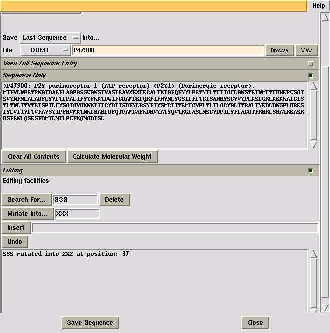

This task reads in a protein sequence in Swissprot format, either stored locally or when downloaded from a specified database. This sequence can then be edited for future use. There is also a function which calculates the molecular weight of a protein.
The "Select Database" menu allows you to choose which database you
wish to obtain a protein sequence - either locally, or from an
external database. The default external database is the Swissprot
database located at the EBI (European Bioinformatics Institute),
although this can be changed to any database specified (See "Changing the external database").
If the database selected is an external database, such as the EBI/SwissProt database, specify the accession code in the "Type Protein Code" box and then press the "Import Sequence" button. A message will appear showing an attempt to connect to the external database specified. If the connection is successful, the sequence of this protein will appear in the "Sequence Only" viewing window.
However, if you wish to view the full details of the selected protein, this can be
seen when the "View Full Sequence Entry" viewing window is opened.
The interface has the ability to manipulate the protein sequence in the "Sequence Only" viewing window in three ways: Deletion, Mutation and Insertion. There is also a Undo function available. A record of all editing functions carried out appears in the textframe in the "Editing" folder.
Before any of the editing functions can be carried out, a section
of the protein sequence must be highlighted. To do this, enter in the
"Search For..." box the sequence within the protein that is to be
manipulated. If this substring is located within the protein sequence
in view, then it will be highlighted in red when the "Search For..."
button is pressed.
While any section of the protein sequence is highlighted, editing can be carried out. So, by pressing the "Delete" button, the previously highlighted section of the protein sequence is deleted and a record of this deletion is shown in the viewing window at the bottom of the "Editing" window.
The "Mutation" function replaces a highlighted section of the
protein sequence with a specified section. In the example below, the
first five residues in the protein sequence are replaced by specifying
the mutation sequence and pressing the "Mutate
into..." button.

The "Insertion" function allows the insertion of residues AFTER a highlighted section. In the example below, "YYYYY" is to be inserted after "XXXXX", the first five residues in the sequence. Search for "XXXXX" so it is highlighted, specify the insertion of "YYYYY" and press the "Insert" button.
The "Undo" function allows the user to undo the last editing function carried out. However, like the other editing functions, this can only be carried out if the search string of the last editing function is highlighted. Otherwise, unwanted changes may occur to the protein sequence.
The "Calculate Molecular Weight" button located in the "Sequence Only" folder allows the user to calculate the molecular weight of the last protein in the "Sequence Only" viewing window. The value for the molecular mass of the protein appears in the textframe in the "Editing" folder, with the amino acid composition of the protein appearing in the shell where CCP4i was started.
Various files are created while running a job in "Import/Edit Protein Sequence". They are as follows:
The database from which a SwissProt file is obtained is configurable, i.e. the database from which the protein sequence is obtained can be changed. This is done by using the "Configure Interface" window in the "System Administration" toolbar, located in the main CCP4I window and changing the "Command to retrieve sequence from database" line.
Change this URL to specify where Swissprot files may be downloaded from. Example command lines are: